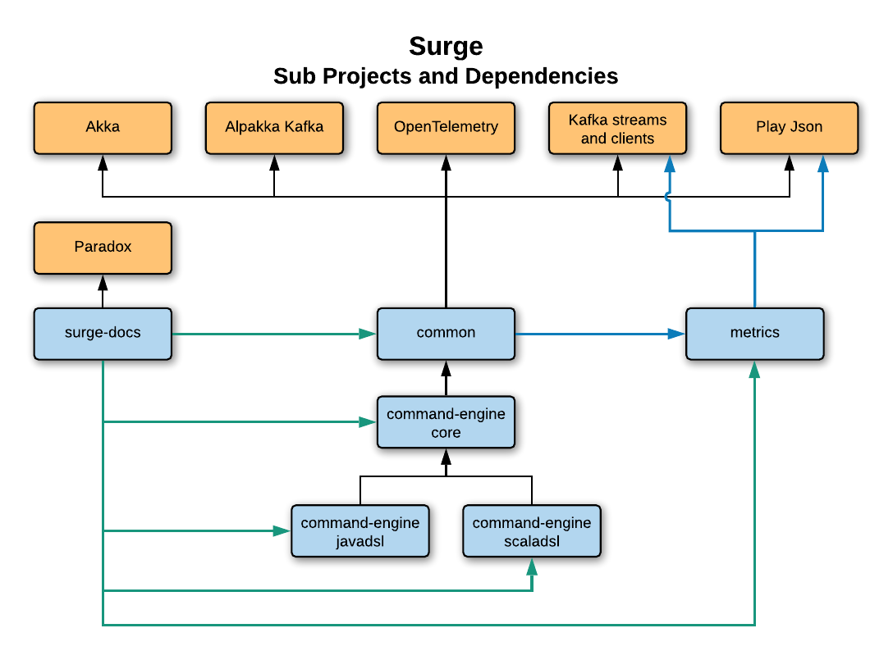

Repository Tour
Note - this page is a work in progress
Project Overview
The Surge Project Repo is broken down into multiple subprojects described below.
Surge Subprojects and Dependencies

Subprojects
Common
- Base traits
- Serializers and Deserializers
- Kafka Consumer Group based Clustering for Akka
- Kafka Aggregate State Stores
- Exceptions
- Observability
- Health Monitoring
- Metrics
- OpenTracing
Command Engine Core
- Command Model Traits
- Akka based Command Processing Engine
- Exceptions
Command Engine Scala DSL
- User Code facing Scala API’s
Command Engine Java DSL
- User Code facing Java API’s
- Provides for conversion of monad types (Option, Collections, Future)
Metrics
- Provides Metrics Model used to instrument other Surge components
- Provides a simple interface to retrieve messages for submission to monitoring platforms
Docs
- These Docs
- Doc Site generated using Paradox
- Docs use tested examples as example snippets
Dependencies
Akka
Alpakka Kafka
Kafka Streams and Clients
Play Json
OpenTelemetry
Paradox Plugin
The source code for this page can be found here.